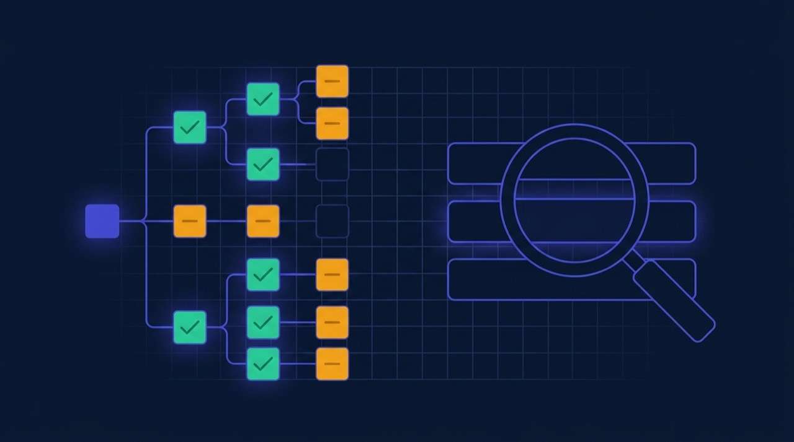

Why Isn't My Website Showing Up on Google?
Before you buy content or links, find out whether Google can even see your pages. Most of the time that is the whole problem.

This is the most common question I get, and it almost always has one of two very different answers. Either Google does not have your pages at all, or it has them and is choosing to rank something else. Those need opposite responses, and people routinely spend money on the second problem when they have the first.
Step one: is it actually indexed?
Search Google for site:yourdomain.com. That shows roughly what Google has indexed from your site.
- No results at all — Google does not have your site. This is an indexing problem. Keep reading.
- Some pages, but not the ones you care about — a partial indexing problem, which is the most common case.
- Everything is there — you have a ranking problem, not an indexing one. Skip to the last section.
For a definitive answer, open Google Search Console, paste a specific URL into URL Inspection, and it will tell you exactly what Google knows about that page and why. If you have not set Search Console up, do that first — you are otherwise guessing about your own site.
Reasons a page is not indexed
1. The site is simply too new
A brand-new domain can take days to weeks to appear. If you launched last Tuesday, submit your sitemap, request indexing on your key pages, and wait. Nothing is wrong.
2. A noindex tag
Check the page source for <meta name="robots" content="noindex">. This is the single most common cause of a page that will never rank no matter what else you do.
On WordPress it usually comes from Settings → Reading → "Discourage search engines", which gets ticked during development and never unticked. I have found this on live sites more than a year after launch. Check it first; it takes ten seconds.
3. Blocked in robots.txt
Visit yourdomain.com/robots.txt. A line reading Disallow: / blocks your entire site. Also common: a staging rule that shipped to production with the rest of the deploy.
Worth understanding the difference — robots.txt stops Google crawling; noindex stops it indexing. A page blocked in robots.txt can still appear in results with no description, because Google knows the URL exists but was never allowed to read it.
4. Canonical tag pointing somewhere else
A canonical tag tells Google which version of a page is authoritative. If every page on your site canonicalises to the homepage — a genuinely common plugin misconfiguration — you are instructing Google to ignore all of them. Check that each page's canonical points to itself.
5. The page is orphaned
If nothing on your site links to a page, Google may never find it. Sitemaps help, but internal links are the stronger signal. Every page worth ranking should be reachable by clicking from your homepage in three steps or fewer.
6. Google sees it as duplicate
Three service pages with 80% identical text means Google picks one and quietly drops the rest. Same for a site reachable at both www and non-www, or both http and https, without redirects. Pick one canonical hostname and 301 the rest to it.
7. The content is too thin to bother with
A page with two sentences and a contact form gives Google no reason to index it. This is not a penalty, just an economic decision on their side.
8. It is behind a login, or still on staging
Password-protected pages cannot be crawled. And if your staging site was ever public, it may be indexed and competing with your live site — check site:staging.yourdomain.com.
Indexed, but not ranking
Different problem entirely. Your pages are in the index; they are just not winning. Usual causes, roughly in order:
- Nothing on the page targets a specific query. A page titled "Services" competes for nothing. "WordPress Development Services" competes for something real.
- Your own pages compete with each other. Several pages targeting the same phrase splits your authority and lets Google choose — usually not the page you would have chosen.
- The target is too competitive. A new site will not rank for "web design" against people who have spent a decade on it. Go narrower: "WordPress developer for nurseries in Kent" has fewer searches and a far better chance of converting the ones it gets.
- The site is slow. Core Web Vitals are a genuine ranking factor and, more importantly, a conversion factor.
- Nobody links to you. Real, harder to fix, and much further down the list than most people assume — usually there is on-page work outstanding first.
What to do, in order
- Set up Search Console and verify the domain.
- Check for noindex and robots.txt blocks. Fix immediately if found.
- Submit your XML sitemap.
- Use URL Inspection on your five most important pages; request indexing.
- Check canonicals point to themselves.
- Make sure every important page is internally linked from somewhere sensible.
- Give each page a unique title and description targeting one specific intent.
- Wait two to three weeks, then check the Pages report for what remains excluded.
How long should this take?
Indexing fixes can resolve within days once Google recrawls. Ranking movement is months, and anyone promising a specific position by a specific date is guessing. The early honest signal is impressions in Search Console starting to climb — that means you are being shown, which always precedes being clicked.
If you would rather have someone work through this properly, it is exactly what the SEO services page describes — audit first, prioritise by impact, fix the foundations before anything else.